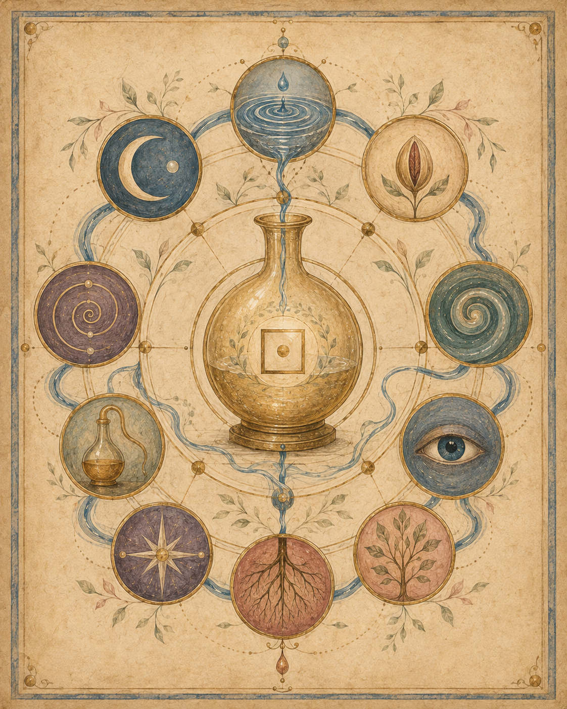
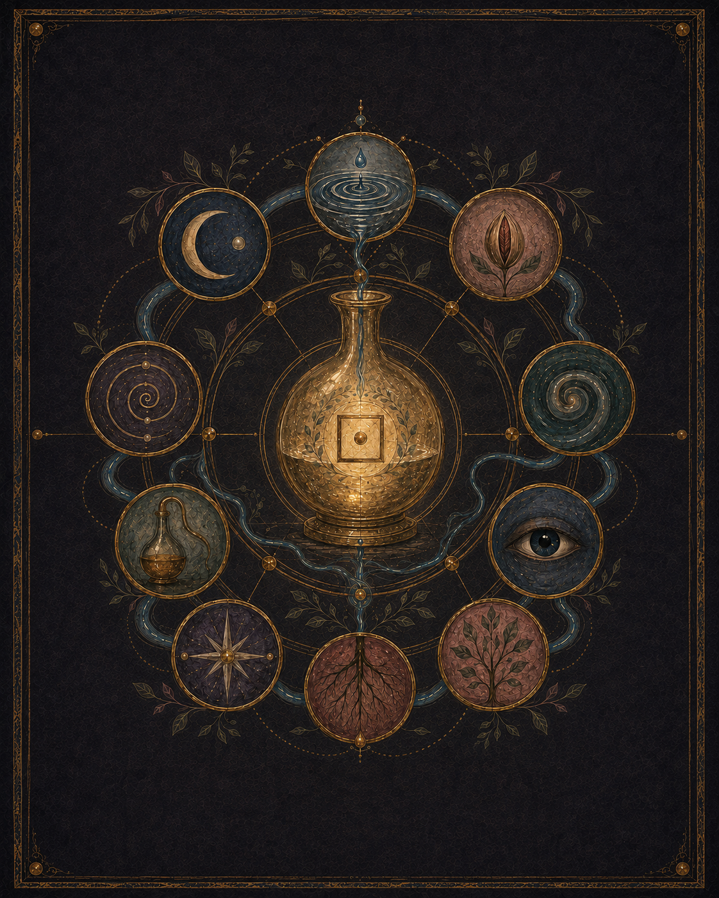

Orientation
Reading ethic, history, mythology, biological ground and the central thesis.
In refinementThe Reading Room · Volume I · In refinement
The study of what the body already produces, already knows and already carries.
A living, single-subject research archive. The index remains visible while its pages are refined. Each door will open when the piece behind it is ready.
Open now
Enter the first chapter directly, or cross the reader’s threshold before you begin.


Chapter I · Open
Symbols, science and names for the Water of Life across tradition—the historical ground.
Enter the Lexicon

Reader’s threshold · Optional
A living record asks for a particular kind of attention: slow enough for each layer to remain what it is.
Cross the thresholdThe reading path
Rooms off the path
Reading ethic, history, mythology, biological ground and the central thesis.
In refinementPractice structure, material forms, protocols and observation tools.
In refinementRun records, measurements, conditions and outcomes.
In refinementThe interpretive bridge between data, tradition and theory.
In refinementIntegrated understanding across multiple runs and lived observation.
In refinementThe archive’s key: terms, measurements, claim tiers and language guardrails.
In refinement